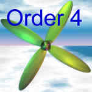
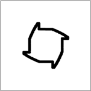
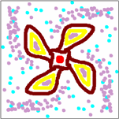
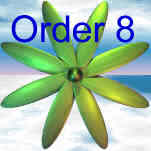
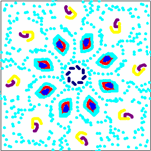
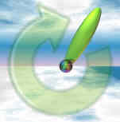
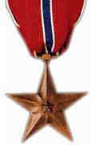

Rotational Symmetry
Rotational Symmetry
A shape has Rotational Symmetry when it still looks the same after some rotation (of less than one full turn).
Rotational Symmetry
Order 2
Rotational Symmetry
Order 3
How many times it matches as we go once around is called the Order.
Think of propeller blades (like below), it makes it easier.
Examples of Different Rotational Symmetry Order
| Order | Example Shape | Artwork |
|---|---|---|
|
(using Symmetry Artist)
|
||
 |
 |
 |
 |
 |
 |
|  |  |  |
| ... and there is also Order 5, 6, 7, and ... | ||
|  |  |
 |
| ... and then there is Order 9, 10, and so on ... | ||
Try rotational symmetry yourself with Symmetry Artist ... !

Is there Rotational Symmetry of Order 1 ?
Not really! If a shape only matches itself once as we go around (ie it matches itself after one full rotation) there is really no symmetry at all ...
... because the word "Symmetry" comes from syn- together and metron measure, and there can't be "together" if there is just one thing.
Real World Examples
 |
 |  |
| A Dartboard has Rotational Symmetry of Order 10 | The US Bronze Star Medal has Order 5 | The London Eye has Order ... oops, I lost count! |